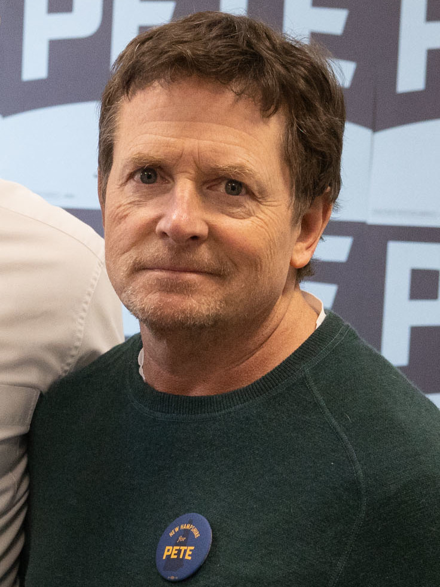
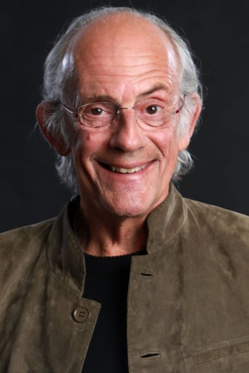
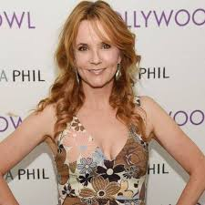
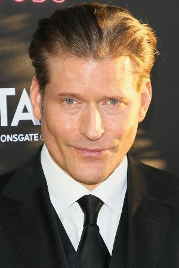

Trama General
"Volver al Futuro" sigue la historia de Marty McFly, un adolescente que viaja accidentalmente al pasado en un DeLorean modificado por su amigo, el excéntrico científico Emmett "Doc" Brown. En 1955, Marty debe asegurarse de que sus padres se conozcan para evitar que su existencia esté en peligro. La saga continúa con más viajes en el tiempo, explorando temas como las consecuencias de alterar el pasado y el futuro. A lo largo de la trilogía, se abordan temas como la amistad, el sacrificio y la importancia de las decisiones en la vida.
Las tres películas, lanzadas en 1985, 1989 y 1990, han dejado una huella indeleble en la cultura pop, combinando humor, ciencia ficción y acción de manera innovadora. Puedes leer más sobre la trilogía en la página de Wikipedia.
Volver al Futuro (1985)
La primera película sigue a Marty McFly, quien accidentalmente viaja al año 1955 en el DeLorean de Doc Brown. Al llegar, se encuentra con sus padres jóvenes y debe asegurarse de que se enamoren, o de lo contrario, su propia existencia estará en peligro. Marty intenta evitar que su madre se enamore de él, mientras que se enfrenta a varios obstáculos, incluidos los matones de la escuela y las complicaciones de la vida en los años 50. Finalmente, con la ayuda de Doc, logra regresar al futuro justo a tiempo.
Volver al Futuro II (1989)
En la secuela, Marty y Doc viajan al futuro, específicamente al año 2015, para prevenir que el hijo de Marty, Marty Jr., cometa un delito. Sin embargo, cuando un villano del pasado, Biff Tannen, se apodera del DeLorean y viaja al pasado para robar un almanaque deportivo, la línea temporal se ve alterada. Marty y Doc deben regresar al 1955 para recuperar el almanaque y restaurar el futuro. A lo largo de la película, se presentan innovaciones futuristas que más tarde se convirtieron en icónicas en la cultura popular.
Volver al Futuro III (1990)
En la tercera entrega, Doc queda atrapado en 1885, donde se enamora de una maestra llamada Clara Clayton. Marty viaja al Viejo Oeste para rescatar a Doc antes de que un villano lo mate. A medida que Marty se adentra en esta era, se enfrenta a los peligros del salvaje oeste, incluyendo un duelo y la falta de tecnología. La película culmina en una emocionante carrera para salvar a Doc y encontrar una forma de regresar al futuro, todo mientras se preserva el romance entre Doc y Clara.
Producción
La trilogía fue dirigida por Robert Zemeckis y producida por Steven Spielberg. Michael J. Fox protagonizó como Marty McFly, con Christopher Lloyd como el excéntrico científico "Doc" Brown. La saga fue un hito en efectos especiales, utilizando innovaciones en cada entrega para mostrar viajes en el tiempo de manera visualmente impresionante.
Elenco Principal
-
Michael J. Fox como Marty McFly.
Michael J. Fox es un actor y productor canadiense-estadounidense conocido por sus papeles en televisión y cine. Además de "Volver al Futuro", es famoso por su actuación en la serie "Family Ties" y "Spin City". Ha sido un defensor de la investigación sobre el Parkinson, enfermedad que padece.
 -
Christopher Lloyd como Emmett "Doc" Brown.
Christopher Lloyd es un actor estadounidense conocido por sus papeles en cine y televisión. Además de "Doc" Brown, es famoso por sus roles en "Los Locos Addams" y "Taxi". Su estilo de actuación excéntrico lo ha hecho un favorito del público en varios géneros.
 -
Lea Thompson como Lorraine Baines.
Lea Thompson es una actriz y directora estadounidense. Es conocida por su papel de Lorraine Baines en la trilogía "Volver al Futuro". Además, ha tenido una carrera exitosa en televisión, incluida la serie "Caroline in the City".
 -
Crispin Glover como George McFly.
Crispin Glover es un actor, director y productor estadounidense. Es conocido por su papel de George McFly en la primera película de "Volver al Futuro" y ha aparecido en varias películas de culto y proyectos independientes a lo largo de su carrera.

Directores
-
Robert Zemeckis
Robert Zemeckis es un director y productor de cine estadounidense, conocido por su innovador uso de efectos especiales. Ha dirigido películas icónicas como "Forrest Gump", "Who Framed Roger Rabbit" y la trilogía "Volver al Futuro".

-
Steven Spielberg
Steven Spielberg es un director, productor y guionista estadounidense, considerado uno de los cineastas más influyentes de la historia. Ha dirigido clásicos como "Jaws", "E.T.", "Jurassic Park" y es un ícono de la industria del cine.
Curiosidades
- Michael J. Fox grabó "Volver al Futuro" mientras trabajaba en la serie "Family Ties". Filmaba por la noche y actuaba en la serie de día.
- El DeLorean fue elegido como máquina del tiempo debido a su diseño futurista y sus icónicas puertas de ala de gaviota.
- El personaje de Doc Brown fue inspirado en Albert Einstein, especialmente su cabello desordenado y su manera excéntrica de ser.
- La velocidad necesaria para viajar en el tiempo (88 millas por hora) se ha convertido en una cifra emblemática en la cultura pop.